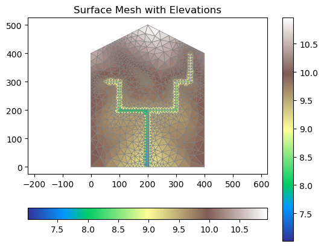

Mixed-element Meshing - Toy Problem#
This workflow provides a testbed for testing features of mixed-element mesh wotkflow. The objects of river tree and huc boundary are a created to mimic what we get from NHDPlus. This example tests the case of two rivers, which is rare but still needs to be considered to make the workflow general
import watershed_workflow.ui
watershed_workflow.ui.setup_logging(1)
## Importing all the package needed to run the workflow
import os
import numpy as np
from matplotlib import pyplot as plt
import shapely
import logging
import copy
import geopandas as gpd
import sys
import watershed_workflow
import watershed_workflow.utils
import watershed_workflow.mesh
import watershed_workflow.resampling
import watershed_workflow.condition
crs = None
## NHDPlus input type objects
# creating watershed polygon
ws1 = shapely.geometry.Polygon(100*np.array([[0,0],[1,0],[2,0],[3,0],[4,0],[4,1],[4,2],[4,3],[4,4],[3,4.5],[2,5],[1,4.5], [0,4], [0,3], [0,2] ,[0,1]], 'd'))
my_hucs = gpd.GeoDataFrame()
my_hucs['geometry'] = [ws1,]
# creating reaches miminc NHDPlus flowlines
reach1=shapely.geometry.LineString([(200,200),(200,0)])
reach2=shapely.geometry.LineString([ (50,300), (100,300), (100,200),(200,200)])
reach3=shapely.geometry.LineString([ (350,400),(350,300),(300,300),(300,200),(200,200)])
reach4=shapely.geometry.LineString([(100,400), (200,300)])
reaches = gpd.GeoDataFrame()
reaches.geometry = [reach1, reach2, reach3, reach4]
def createCopy(watershed, rivers):
"""To compare before/after, we often want to create copies. Note in real workflows most things are done in-place without copies."""
return watershed.deepcopy(), [r.deepcopy() for r in rivers]
# creating watershed_workflow.split_hucs.SplitHUCs object for demo watershed
watershed = watershed_workflow.split_hucs.SplitHUCs(my_hucs)
2025-08-30 18:11:33,542 - root - INFO: Removing holes on 1 polygons
2025-08-30 18:11:33,543 - root - INFO: -- removed interior
2025-08-30 18:11:33,543 - root - INFO: -- union
2025-08-30 18:11:33,543 - root - INFO: Parsing 1 components for holes
2025-08-30 18:11:33,543 - root - INFO: -- complete
rivers = watershed_workflow.river_tree.createRivers(reaches, method='geometry')
# copy the originals
watershed_orig, rivers_orig = watershed, rivers
# simplify the geometry for a "nicer" discrete object, using a uniform sampling strategy
watershed1, rivers1 = createCopy(watershed_orig, rivers_orig)
watershed_workflow.simplify(watershed1, rivers1, 10, keep_points=True)
2025-08-30 18:11:33,555 - root - INFO:
2025-08-30 18:11:33,555 - root - INFO: Simplifying
2025-08-30 18:11:33,556 - root - INFO: ------------------------------
2025-08-30 18:11:33,556 - root - INFO: None
2025-08-30 18:11:33,556 - root - INFO: Presimplify to remove colinear, coincident points.
2025-08-30 18:11:33,557 - root - INFO: None
2025-08-30 18:11:33,557 - root - INFO: Pruning leaf reaches < 10
2025-08-30 18:11:33,557 - root - INFO: None
2025-08-30 18:11:33,557 - root - INFO: Merging internal reaches < 10
2025-08-30 18:11:33,559 - root - INFO: None
2025-08-30 18:11:33,560 - root - INFO: reach: min seg length: 50.0000000000 min geom length: 141.4213562373
2025-08-30 18:11:33,560 - root - INFO: reach: med seg length: 100.0000000000 med geom length: 225.0000000000
2025-08-30 18:11:33,562 - root - INFO: reach: max seg length: 200.0000000000 max geom length: 350.0000000000
2025-08-30 18:11:33,562 - root - INFO:
2025-08-30 18:11:33,563 - root - INFO: HUC : min seg length: 223.6067977500 min geom length: 1647.2135955000
2025-08-30 18:11:33,563 - root - INFO: HUC : med seg length: 400.0000000000 med geom length: 1647.2135955000
2025-08-30 18:11:33,563 - root - INFO: HUC : max seg length: 400.0000000000 max geom length: 1647.2135955000
2025-08-30 18:11:33,563 - root - INFO:
2025-08-30 18:11:33,564 - root - INFO: Snapping discrete points to make rivers and HUCs discretely consistent.
2025-08-30 18:11:33,564 - root - INFO: -- snapping HUC triple junctions to reaches
2025-08-30 18:11:33,564 - root - INFO: reach: min seg length: 50.0000000000 min geom length: 141.4213562373
2025-08-30 18:11:33,565 - root - INFO: reach: med seg length: 100.0000000000 med geom length: 225.0000000000
2025-08-30 18:11:33,565 - root - INFO: reach: max seg length: 200.0000000000 max geom length: 350.0000000000
2025-08-30 18:11:33,565 - root - INFO:
2025-08-30 18:11:33,565 - root - INFO: HUC : min seg length: 223.6067977500 min geom length: 1647.2135955000
2025-08-30 18:11:33,565 - root - INFO: HUC : med seg length: 400.0000000000 med geom length: 1647.2135955000
2025-08-30 18:11:33,565 - root - INFO: HUC : max seg length: 400.0000000000 max geom length: 1647.2135955000
2025-08-30 18:11:33,566 - root - INFO:
2025-08-30 18:11:33,566 - root - INFO: None
2025-08-30 18:11:33,566 - root - INFO: -- snapping reach endpoints to HUC boundaries
2025-08-30 18:11:33,567 - root - INFO: new_lss: min seg length: 200.0000000000 min geom length: 1647.2135955000
2025-08-30 18:11:33,568 - root - INFO: new_lss: med seg length: 223.6067977500 med geom length: 1647.2135955000
2025-08-30 18:11:33,568 - root - INFO: new_lss: max seg length: 400.0000000000 max geom length: 1647.2135955000
2025-08-30 18:11:33,568 - root - INFO:
2025-08-30 18:11:33,569 - root - INFO: reach: min seg length: 50.0000000000 min geom length: 141.4213562373
2025-08-30 18:11:33,569 - root - INFO: reach: med seg length: 100.0000000000 med geom length: 225.0000000000
2025-08-30 18:11:33,570 - root - INFO: reach: max seg length: 200.0000000000 max geom length: 350.0000000000
2025-08-30 18:11:33,570 - root - INFO:
2025-08-30 18:11:33,570 - root - INFO: HUC : min seg length: 200.0000000000 min geom length: 1647.2135955000
2025-08-30 18:11:33,570 - root - INFO: HUC : med seg length: 223.6067977500 med geom length: 1647.2135955000
2025-08-30 18:11:33,571 - root - INFO: HUC : max seg length: 400.0000000000 max geom length: 1647.2135955000
2025-08-30 18:11:33,571 - root - INFO:
2025-08-30 18:11:33,571 - root - INFO: None
2025-08-30 18:11:33,571 - root - INFO: -- cutting reaches at HUC boundaries
2025-08-30 18:11:33,571 - root - INFO: intersection found
2025-08-30 18:11:33,572 - root - INFO: - cutting reach at external boundary of HUCs:
2025-08-30 18:11:33,572 - root - INFO: split HUC boundary ls into 1 pieces
2025-08-30 18:11:33,572 - root - INFO: split reach ls into 1 pieces
2025-08-30 18:11:33,573 - root - INFO: reach: min seg length: 50.0000000000 min geom length: 141.4213562373
2025-08-30 18:11:33,573 - root - INFO: reach: med seg length: 100.0000000000 med geom length: 225.0000000000
2025-08-30 18:11:33,573 - root - INFO: reach: max seg length: 200.0000000000 max geom length: 350.0000000000
2025-08-30 18:11:33,574 - root - INFO:
2025-08-30 18:11:33,574 - root - INFO: HUC : min seg length: 200.0000000000 min geom length: 1647.2135955000
2025-08-30 18:11:33,574 - root - INFO: HUC : med seg length: 223.6067977500 med geom length: 1647.2135955000
2025-08-30 18:11:33,574 - root - INFO: HUC : max seg length: 400.0000000000 max geom length: 1647.2135955000
2025-08-30 18:11:33,575 - root - INFO:
2025-08-30 18:11:33,575 - root - INFO: None
2025-08-30 18:11:33,575 - root - INFO:
2025-08-30 18:11:33,575 - root - INFO: Simplification Diagnostics
2025-08-30 18:11:33,576 - root - INFO: ------------------------------
2025-08-30 18:11:33,576 - root - INFO: reach: min seg length: 50.0000000000 min geom length: 141.4213562373
2025-08-30 18:11:33,576 - root - INFO: reach: med seg length: 100.0000000000 med geom length: 225.0000000000
2025-08-30 18:11:33,577 - root - INFO: reach: max seg length: 200.0000000000 max geom length: 350.0000000000
2025-08-30 18:11:33,577 - root - INFO:
2025-08-30 18:11:33,577 - root - INFO: HUC : min seg length: 200.0000000000 min geom length: 1647.2135955000
2025-08-30 18:11:33,577 - root - INFO: HUC : med seg length: 223.6067977500 med geom length: 1647.2135955000
2025-08-30 18:11:33,577 - root - INFO: HUC : max seg length: 400.0000000000 max geom length: 1647.2135955000
2025-08-30 18:11:33,577 - root - INFO:
2025-08-30 18:11:33,577 - root - INFO: None
2025-08-30 18:11:33,578 - root - INFO:
2025-08-30 18:11:33,578 - root - INFO: Resampling HUC and river
2025-08-30 18:11:33,578 - root - INFO: ------------------------------
2025-08-30 18:11:33,578 - root - INFO: -- resampling HUCs based on uniform target 10
2025-08-30 18:11:33,579 - root - INFO: None
2025-08-30 18:11:33,579 - root - INFO: -- resampling reaches based on uniform target 10
2025-08-30 18:11:33,581 - root - INFO: None
2025-08-30 18:11:33,581 - root - INFO:
2025-08-30 18:11:33,581 - root - INFO: Resampling Diagnostics
2025-08-30 18:11:33,582 - root - INFO: ------------------------------
2025-08-30 18:11:33,582 - root - INFO: reach: min seg length: 9.4280904158 min geom length: 141.4213562373
2025-08-30 18:11:33,582 - root - INFO: reach: med seg length: 10.0000000000 med geom length: 225.0000000000
2025-08-30 18:11:33,582 - root - INFO: reach: max seg length: 10.0000000000 max geom length: 350.0000000000
2025-08-30 18:11:33,582 - root - INFO:
2025-08-30 18:11:33,583 - root - INFO: HUC : min seg length: 9.7220346848 min geom length: 1647.2135955000
2025-08-30 18:11:33,583 - root - INFO: HUC : med seg length: 10.0000000000 med geom length: 1647.2135955000
2025-08-30 18:11:33,583 - root - INFO: HUC : max seg length: 10.0000000000 max geom length: 1647.2135955000
2025-08-30 18:11:33,583 - root - INFO:
2025-08-30 18:11:33,583 - root - INFO: None
2025-08-30 18:11:33,583 - root - INFO:
2025-08-30 18:11:33,583 - root - INFO: Clean up sharp angles, both internally and at junctions.
2025-08-30 18:11:33,584 - root - INFO: ------------------------------
2025-08-30 18:11:33,586 - root - INFO: SSA1: None
2025-08-30 18:11:33,587 - root - INFO: SSA2: None
2025-08-30 18:11:33,588 - root - INFO: SSA3: None
2025-08-30 18:11:33,590 - root - INFO: SSA4: None
2025-08-30 18:11:33,590 - root - INFO: SSA1: None
2025-08-30 18:11:33,590 - root - INFO: SSA2: None
2025-08-30 18:11:33,591 - root - INFO: SSA3: None
2025-08-30 18:11:33,592 - root - INFO: SSA4: None
2025-08-30 18:11:33,592 - root - INFO: Cleaned up 0 sharp angles.
2025-08-30 18:11:33,592 - root - INFO: reach: min seg length: 9.4280904158 min geom length: 141.4213562373
2025-08-30 18:11:33,592 - root - INFO: reach: med seg length: 10.0000000000 med geom length: 225.0000000000
2025-08-30 18:11:33,593 - root - INFO: reach: max seg length: 10.0000000000 max geom length: 350.0000000000
2025-08-30 18:11:33,593 - root - INFO:
2025-08-30 18:11:33,593 - root - INFO: HUC : min seg length: 9.7220346848 min geom length: 1647.2135955000
2025-08-30 18:11:33,593 - root - INFO: HUC : med seg length: 10.0000000000 med geom length: 1647.2135955000
2025-08-30 18:11:33,593 - root - INFO: HUC : max seg length: 10.0000000000 max geom length: 1647.2135955000
2025-08-30 18:11:33,593 - root - INFO:
2025-08-30 18:11:33,593 - root - INFO: None
# simplify the geometry using a distance-function based resampling
watershed2, rivers2 = createCopy(watershed_orig, rivers_orig)
watershed_workflow.simplify(watershed2, rivers2, 10, 50, 50, 150, keep_points=True)
2025-08-30 18:11:33,596 - root - INFO:
2025-08-30 18:11:33,596 - root - INFO: Simplifying
2025-08-30 18:11:33,597 - root - INFO: ------------------------------
2025-08-30 18:11:33,597 - root - INFO: None
2025-08-30 18:11:33,597 - root - INFO: Presimplify to remove colinear, coincident points.
2025-08-30 18:11:33,597 - root - INFO: None
2025-08-30 18:11:33,599 - root - INFO: Pruning leaf reaches < 10
2025-08-30 18:11:33,600 - root - INFO: None
2025-08-30 18:11:33,600 - root - INFO: Merging internal reaches < 10
2025-08-30 18:11:33,600 - root - INFO: None
2025-08-30 18:11:33,601 - root - INFO: reach: min seg length: 50.0000000000 min geom length: 141.4213562373
2025-08-30 18:11:33,601 - root - INFO: reach: med seg length: 100.0000000000 med geom length: 225.0000000000
2025-08-30 18:11:33,601 - root - INFO: reach: max seg length: 200.0000000000 max geom length: 350.0000000000
2025-08-30 18:11:33,602 - root - INFO:
2025-08-30 18:11:33,602 - root - INFO: HUC : min seg length: 223.6067977500 min geom length: 1647.2135955000
2025-08-30 18:11:33,603 - root - INFO: HUC : med seg length: 400.0000000000 med geom length: 1647.2135955000
2025-08-30 18:11:33,603 - root - INFO: HUC : max seg length: 400.0000000000 max geom length: 1647.2135955000
2025-08-30 18:11:33,603 - root - INFO:
2025-08-30 18:11:33,603 - root - INFO: Snapping discrete points to make rivers and HUCs discretely consistent.
2025-08-30 18:11:33,603 - root - INFO: -- snapping HUC triple junctions to reaches
2025-08-30 18:11:33,604 - root - INFO: reach: min seg length: 50.0000000000 min geom length: 141.4213562373
2025-08-30 18:11:33,605 - root - INFO: reach: med seg length: 100.0000000000 med geom length: 225.0000000000
2025-08-30 18:11:33,605 - root - INFO: reach: max seg length: 200.0000000000 max geom length: 350.0000000000
2025-08-30 18:11:33,605 - root - INFO:
2025-08-30 18:11:33,605 - root - INFO: HUC : min seg length: 223.6067977500 min geom length: 1647.2135955000
2025-08-30 18:11:33,606 - root - INFO: HUC : med seg length: 400.0000000000 med geom length: 1647.2135955000
2025-08-30 18:11:33,606 - root - INFO: HUC : max seg length: 400.0000000000 max geom length: 1647.2135955000
2025-08-30 18:11:33,606 - root - INFO:
2025-08-30 18:11:33,606 - root - INFO: None
2025-08-30 18:11:33,607 - root - INFO: -- snapping reach endpoints to HUC boundaries
2025-08-30 18:11:33,609 - root - INFO: new_lss: min seg length: 200.0000000000 min geom length: 1647.2135955000
2025-08-30 18:11:33,609 - root - INFO: new_lss: med seg length: 223.6067977500 med geom length: 1647.2135955000
2025-08-30 18:11:33,610 - root - INFO: new_lss: max seg length: 400.0000000000 max geom length: 1647.2135955000
2025-08-30 18:11:33,610 - root - INFO:
2025-08-30 18:11:33,611 - root - INFO: reach: min seg length: 50.0000000000 min geom length: 141.4213562373
2025-08-30 18:11:33,611 - root - INFO: reach: med seg length: 100.0000000000 med geom length: 225.0000000000
2025-08-30 18:11:33,611 - root - INFO: reach: max seg length: 200.0000000000 max geom length: 350.0000000000
2025-08-30 18:11:33,611 - root - INFO:
2025-08-30 18:11:33,612 - root - INFO: HUC : min seg length: 200.0000000000 min geom length: 1647.2135955000
2025-08-30 18:11:33,612 - root - INFO: HUC : med seg length: 223.6067977500 med geom length: 1647.2135955000
2025-08-30 18:11:33,612 - root - INFO: HUC : max seg length: 400.0000000000 max geom length: 1647.2135955000
2025-08-30 18:11:33,612 - root - INFO:
2025-08-30 18:11:33,612 - root - INFO: None
2025-08-30 18:11:33,613 - root - INFO: -- cutting reaches at HUC boundaries
2025-08-30 18:11:33,613 - root - INFO: intersection found
2025-08-30 18:11:33,613 - root - INFO: - cutting reach at external boundary of HUCs:
2025-08-30 18:11:33,613 - root - INFO: split HUC boundary ls into 1 pieces
2025-08-30 18:11:33,613 - root - INFO: split reach ls into 1 pieces
2025-08-30 18:11:33,615 - root - INFO: reach: min seg length: 50.0000000000 min geom length: 141.4213562373
2025-08-30 18:11:33,615 - root - INFO: reach: med seg length: 100.0000000000 med geom length: 225.0000000000
2025-08-30 18:11:33,615 - root - INFO: reach: max seg length: 200.0000000000 max geom length: 350.0000000000
2025-08-30 18:11:33,615 - root - INFO:
2025-08-30 18:11:33,616 - root - INFO: HUC : min seg length: 200.0000000000 min geom length: 1647.2135955000
2025-08-30 18:11:33,616 - root - INFO: HUC : med seg length: 223.6067977500 med geom length: 1647.2135955000
2025-08-30 18:11:33,616 - root - INFO: HUC : max seg length: 400.0000000000 max geom length: 1647.2135955000
2025-08-30 18:11:33,616 - root - INFO:
2025-08-30 18:11:33,616 - root - INFO: None
2025-08-30 18:11:33,616 - root - INFO:
2025-08-30 18:11:33,617 - root - INFO: Simplification Diagnostics
2025-08-30 18:11:33,617 - root - INFO: ------------------------------
2025-08-30 18:11:33,617 - root - INFO: reach: min seg length: 50.0000000000 min geom length: 141.4213562373
2025-08-30 18:11:33,618 - root - INFO: reach: med seg length: 100.0000000000 med geom length: 225.0000000000
2025-08-30 18:11:33,618 - root - INFO: reach: max seg length: 200.0000000000 max geom length: 350.0000000000
2025-08-30 18:11:33,618 - root - INFO:
2025-08-30 18:11:33,618 - root - INFO: HUC : min seg length: 200.0000000000 min geom length: 1647.2135955000
2025-08-30 18:11:33,618 - root - INFO: HUC : med seg length: 223.6067977500 med geom length: 1647.2135955000
2025-08-30 18:11:33,619 - root - INFO: HUC : max seg length: 400.0000000000 max geom length: 1647.2135955000
2025-08-30 18:11:33,619 - root - INFO:
2025-08-30 18:11:33,619 - root - INFO: None
2025-08-30 18:11:33,619 - root - INFO:
2025-08-30 18:11:33,619 - root - INFO: Resampling HUC and river
2025-08-30 18:11:33,619 - root - INFO: ------------------------------
2025-08-30 18:11:33,620 - root - INFO: -- resampling HUCs based on distance function (50, 10, 150, 50)
2025-08-30 18:11:33,675 - root - INFO: None
2025-08-30 18:11:33,676 - root - INFO: -- resampling reaches based on uniform target 10
2025-08-30 18:11:33,678 - root - INFO: None
2025-08-30 18:11:33,678 - root - INFO:
2025-08-30 18:11:33,678 - root - INFO: Resampling Diagnostics
2025-08-30 18:11:33,678 - root - INFO: ------------------------------
2025-08-30 18:11:33,679 - root - INFO: reach: min seg length: 9.4280904158 min geom length: 141.4213562373
2025-08-30 18:11:33,679 - root - INFO: reach: med seg length: 10.0000000000 med geom length: 225.0000000000
2025-08-30 18:11:33,679 - root - INFO: reach: max seg length: 10.0000000000 max geom length: 350.0000000000
2025-08-30 18:11:33,679 - root - INFO:
2025-08-30 18:11:33,679 - root - INFO: HUC : min seg length: 9.2023159404 min geom length: 1647.2135955000
2025-08-30 18:11:33,679 - root - INFO: HUC : med seg length: 12.0793869794 med geom length: 1647.2135955000
2025-08-30 18:11:33,680 - root - INFO: HUC : max seg length: 49.9229443249 max geom length: 1647.2135955000
2025-08-30 18:11:33,680 - root - INFO:
2025-08-30 18:11:33,680 - root - INFO: None
2025-08-30 18:11:33,680 - root - INFO:
2025-08-30 18:11:33,680 - root - INFO: Clean up sharp angles, both internally and at junctions.
2025-08-30 18:11:33,680 - root - INFO: ------------------------------
2025-08-30 18:11:33,682 - root - INFO: SSA1: None
2025-08-30 18:11:33,683 - root - INFO: SSA2: None
2025-08-30 18:11:33,684 - root - INFO: SSA3: None
2025-08-30 18:11:33,685 - root - INFO: SSA4: None
2025-08-30 18:11:33,686 - root - INFO: SSA1: None
2025-08-30 18:11:33,686 - root - INFO: SSA2: None
2025-08-30 18:11:33,686 - root - INFO: SSA3: None
2025-08-30 18:11:33,687 - root - INFO: SSA4: None
2025-08-30 18:11:33,687 - root - INFO: Cleaned up 0 sharp angles.
2025-08-30 18:11:33,687 - root - INFO: reach: min seg length: 9.4280904158 min geom length: 141.4213562373
2025-08-30 18:11:33,687 - root - INFO: reach: med seg length: 10.0000000000 med geom length: 225.0000000000
2025-08-30 18:11:33,687 - root - INFO: reach: max seg length: 10.0000000000 max geom length: 350.0000000000
2025-08-30 18:11:33,687 - root - INFO:
2025-08-30 18:11:33,688 - root - INFO: HUC : min seg length: 9.2023159404 min geom length: 1647.2135955000
2025-08-30 18:11:33,688 - root - INFO: HUC : med seg length: 12.0793869794 med geom length: 1647.2135955000
2025-08-30 18:11:33,688 - root - INFO: HUC : max seg length: 49.9229443249 max geom length: 1647.2135955000
2025-08-30 18:11:33,688 - root - INFO:
2025-08-30 18:11:33,688 - root - INFO: None
# plot the results
def plot(ws, rivs, ax=None):
if ax is None:
fig, ax = plt.subplots(1, 1, figsize=figsize)
ws.plot(color='k', marker='+', markersize=20, ax=ax)
for river in rivs:
river.plot(marker='x', markersize=20, ax=ax)
fig, axs = plt.subplots(1,3)
plot(watershed_orig, rivers_orig, axs[0])
axs[0].set_title('original')
plot(watershed1, rivers1, axs[1])
axs[1].set_title('uniform resampling')
plot(watershed2, rivers2, axs[2])
axs[2].set_title('dist-based resampling')
Text(0.5, 1.0, 'dist-based resampling')
Surface Meshing#
## Triangulation
refine_d0 = 12
refine_d1 = 18
refine_A0 = 82
refine_A1 = 500
d0 = refine_d0; d1 = refine_d1
A0 = refine_A0; A1 = refine_A1
# Refine triangles if they get too acute
min_angle = 32 # degrees
# width of reach by stream order (order:width) or integer
widths = 5.0
# created two versions of the discrete watershed and rivers -- let's use the second one
watershed, rivers = createCopy(watershed2, rivers2)
#info = watershed_workflow.tessalateRiverAligned(watershed, rivers, river_width=widths, diagnostics=True)
m2, areas, dists = watershed_workflow.tessalateRiverAligned(watershed, rivers, river_width=widths,
refine_min_angle=min_angle, refine_distance=[d0,A0,d1,A1],
tol=0.1, diagnostics=True)
2025-08-30 18:11:34,023 - root - INFO:
2025-08-30 18:11:34,023 - root - INFO: Stream-aligned Meshing
2025-08-30 18:11:34,024 - root - INFO: ------------------------------
2025-08-30 18:11:34,024 - root - INFO: Creating stream-aligned mesh...
2025-08-30 18:11:34,031 - root - INFO: Adjusting HUC to match reaches at outlet
2025-08-30 18:11:34,037 - root - INFO:
2025-08-30 18:11:34,038 - root - INFO: Triangulation
2025-08-30 18:11:34,038 - root - INFO: ------------------------------
2025-08-30 18:11:34,041 - root - INFO: Triangulating...
2025-08-30 18:11:34,041 - root - INFO: 277 points and 278 facets
2025-08-30 18:11:34,041 - root - INFO: checking graph consistency
2025-08-30 18:11:34,042 - root - INFO: tolerance is set to 0.1
2025-08-30 18:11:34,042 - root - INFO: building graph data structures
2025-08-30 18:11:34,043 - root - INFO: triangle.build...
2025-08-30 18:11:34,128 - root - INFO: ...built: 872 mesh points and 1467 triangles
2025-08-30 18:11:34,129 - root - INFO: Plotting triangulation diagnostics
2025-08-30 18:11:34,156 - root - INFO: min area = 20.711983156357746
2025-08-30 18:11:34,157 - root - INFO: max area = 878.7740910490738
# plot the mesh
fig, ax = plt.subplots(1,1)
plot(watershed, rivers, ax=ax)
df_mesh = gpd.GeoDataFrame(geometry=[shapely.geometry.Polygon(m2.coords[c, :]) for c in m2.conn])
df_mesh.boundary.plot(ax=ax, color='grey')
<Axes: >
mls = shapely.geometry.MultiLineString([reach.linestring for river in rivers for reach in river.preOrder()])
dist = np.array([shapely.geometry.Point(coord).distance(mls) for coord in m2.coords])
# providing elevations to each point of the mesh (real case this would come from DEMs)
points3=np.zeros((len(m2.coords),3))
points3[:,:2]=m2.coords
points3[:,2]=9+dist/200+m2.coords[:,1]/400 # grad
m2.coords = points3
# depress the river corridor to burn in streams
def conditionRiverMesh(m2, river, depress_by):
m2_copy = copy.deepcopy(m2)
for reach in river:
for i, elem in enumerate(reach['elems']):
for j in range(len(elem)):
m2.coords[elem[j]][2] = m2_copy.coords[elem[j]][2] - depress_by
for river in rivers:
conditionRiverMesh(m2, river, 1)
# plotting surface mesh with elevations
fig, ax = plt.subplots(1,1)
# Get elevation data range
elev_min = m2.coords[:,2].min()
elev_max = m2.coords[:,2].max()
# Create normalized colormap
norm = plt.Normalize(vmin=elev_min, vmax=elev_max)
mp = m2.plot(facecolors='elevation', ax=ax, linewidth=0.5, cmap='terrain', norm = norm)
cbar = fig.colorbar(mp, orientation="horizontal")
ax.set_title('surface mesh with elevations')
ax.set_aspect('equal', 'datalim')
plt.title('Surface Mesh with Elevations')
plt.show()

Mesh Extrusion#
## **** Creating a 3D mesh
# this is oversimplified case where we wille xtrude this mesh in 3D with 10 layers of prescribed thicknesses
total_thickness = 10
dzs=[0.1,0.2, 0.2, 0.25,0.25,0.25,0.25,1,1.25,1.25,2,3]
print(sum(dzs))
assert(sum(dzs)==total_thickness)
# layer extrusion
# -- data structures needed for extrusion
layer_types = []
layer_data = []
layer_ncells = []
layer_mat_ids = []
depth = 0
for dz in dzs:
depth += 0.5 * dz
layer_types.append('constant')
layer_data.append(dz)
layer_ncells.append(1)
layer_mat_ids.append(1000)
depth += 0.5 * dz
# print the summary
watershed_workflow.mesh.Mesh3D.summarizeExtrusion(layer_types, layer_data,
layer_ncells, layer_mat_ids)
2025-08-30 18:11:34,518 - root - INFO: Cell summary:
2025-08-30 18:11:34,518 - root - INFO: ------------------------------------------------------------
2025-08-30 18:11:34,519 - root - INFO: l_id | c_id |mat_id | dz | z_top
2025-08-30 18:11:34,519 - root - INFO: ------------------------------------------------------------
2025-08-30 18:11:34,519 - root - INFO: 00 | 00 | 1000 | 0.100000 | 0.000000
2025-08-30 18:11:34,519 - root - INFO: 01 | 01 | 1000 | 0.200000 | 0.100000
2025-08-30 18:11:34,520 - root - INFO: 02 | 02 | 1000 | 0.200000 | 0.300000
2025-08-30 18:11:34,520 - root - INFO: 03 | 03 | 1000 | 0.250000 | 0.500000
2025-08-30 18:11:34,520 - root - INFO: 04 | 04 | 1000 | 0.250000 | 0.750000
2025-08-30 18:11:34,520 - root - INFO: 05 | 05 | 1000 | 0.250000 | 1.000000
2025-08-30 18:11:34,520 - root - INFO: 06 | 06 | 1000 | 0.250000 | 1.250000
2025-08-30 18:11:34,520 - root - INFO: 07 | 07 | 1000 | 1.000000 | 1.500000
2025-08-30 18:11:34,521 - root - INFO: 08 | 08 | 1000 | 1.250000 | 2.500000
2025-08-30 18:11:34,521 - root - INFO: 09 | 09 | 1000 | 1.250000 | 3.750000
2025-08-30 18:11:34,521 - root - INFO: 10 | 10 | 1000 | 2.000000 | 5.000000
2025-08-30 18:11:34,521 - root - INFO: 11 | 11 | 1000 | 3.000000 | 7.000000
10.0
# extrude
m3 = watershed_workflow.mesh.Mesh3D.extruded_Mesh2D(m2,layer_types, layer_data,
layer_ncells, layer_mat_ids)
Mesh IO#
Save the mesh file as an Exodus II file.
# saving mesh as exodus file
if os.path.isfile('demo_mixed_element_mesh.exo'):
os.remove('demo_mixed_element_mesh.exo')
m3.writeExodus('demo_mixed_element_mesh.exo')
2025-08-30 18:11:34,616 - root - INFO: adding side set: 1
2025-08-30 18:11:34,622 - root - INFO: adding side set: 2
2025-08-30 18:11:34,624 - root - INFO: adding side set: 3
You are using exodus.py v 1.20.10 (seacas-py3), a python wrapper of some of the exodus library.
Copyright (c) 2013, 2014, 2015, 2016, 2017, 2018, 2019, 2020, 2021 National Technology &
Engineering Solutions of Sandia, LLC (NTESS). Under the terms of
Contract DE-NA0003525 with NTESS, the U.S. Government retains certain
rights in this software.
Opening exodus file: demo_mixed_element_mesh.exo
Closing exodus file: demo_mixed_element_mesh.exo